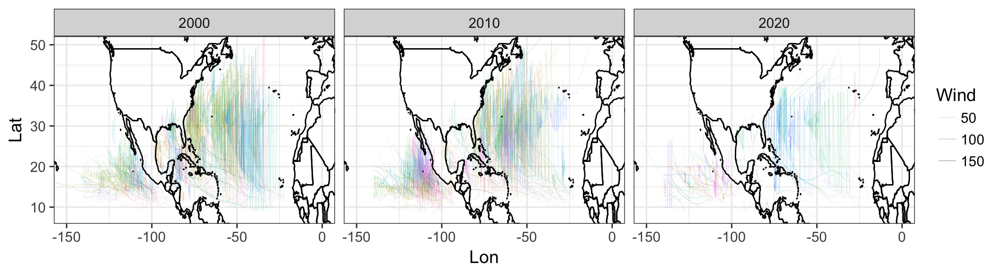
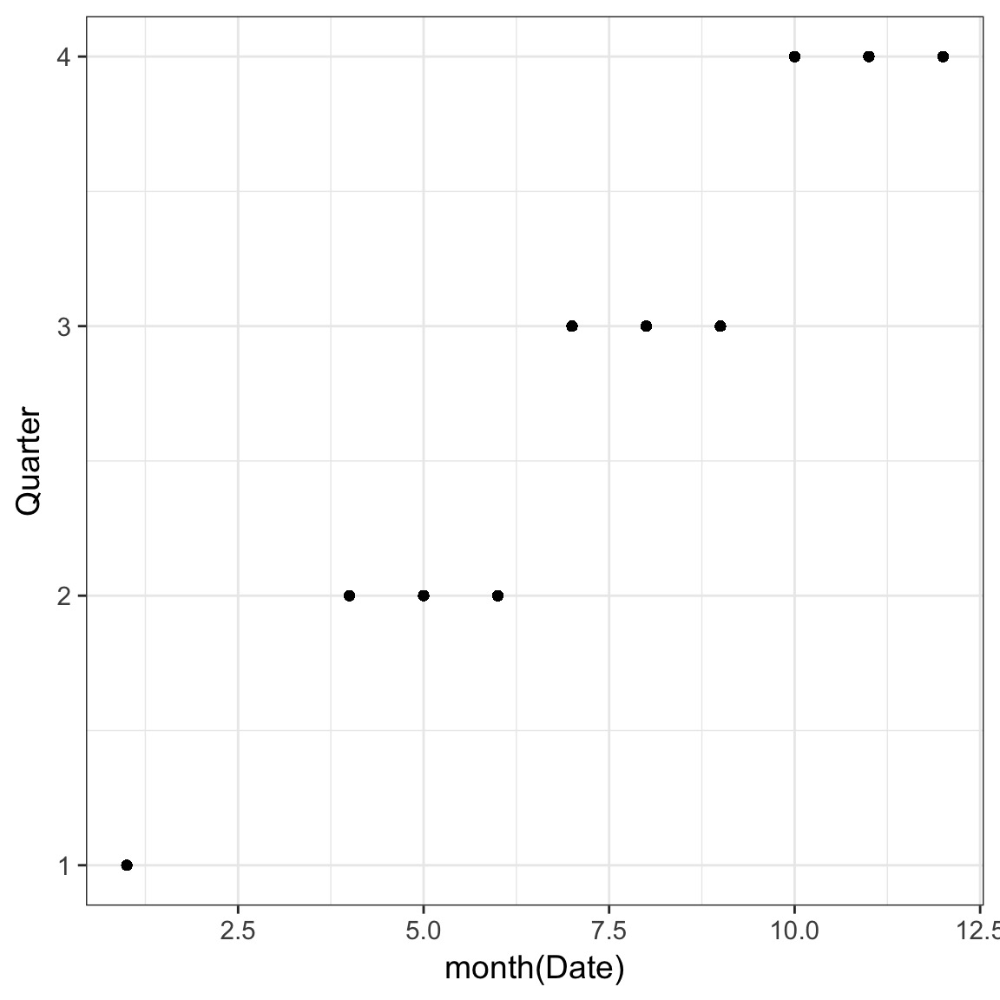
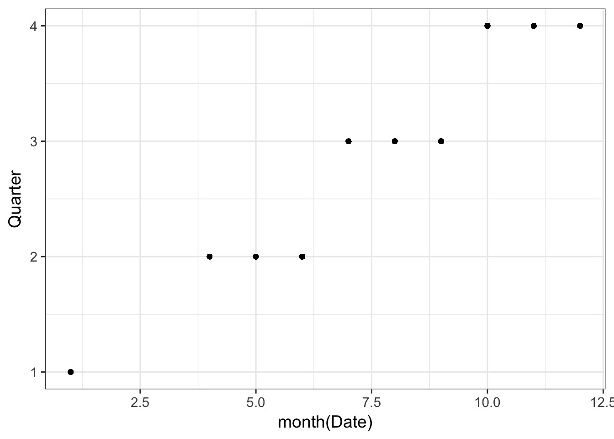
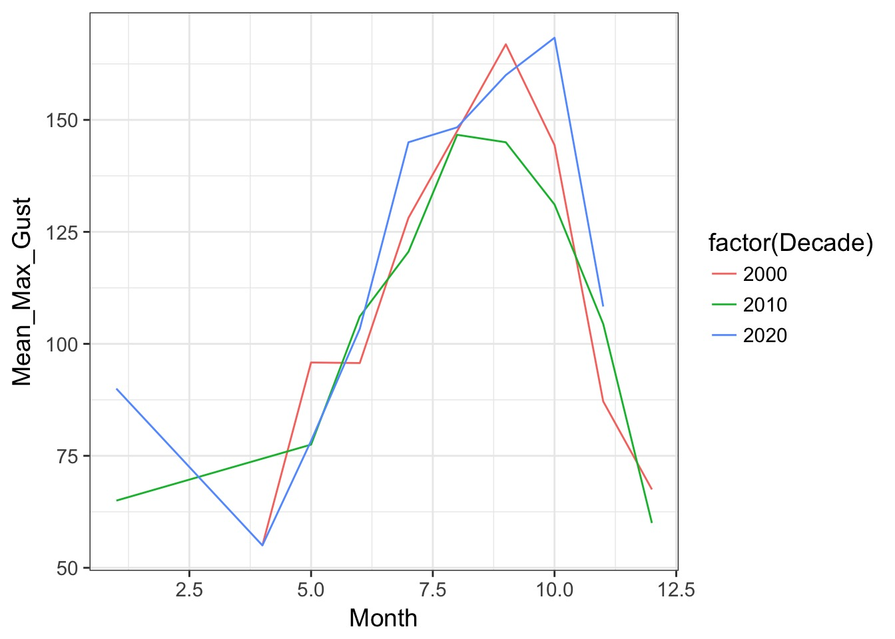
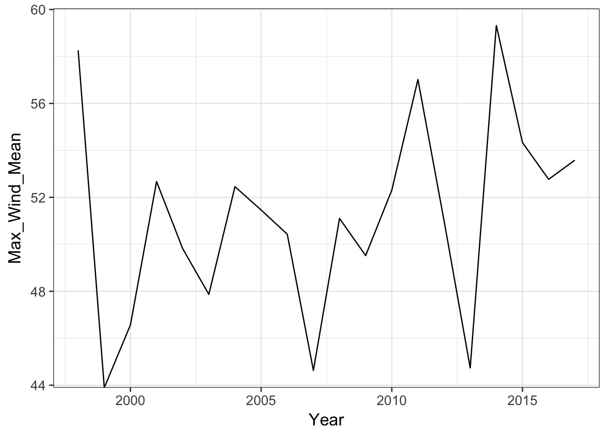
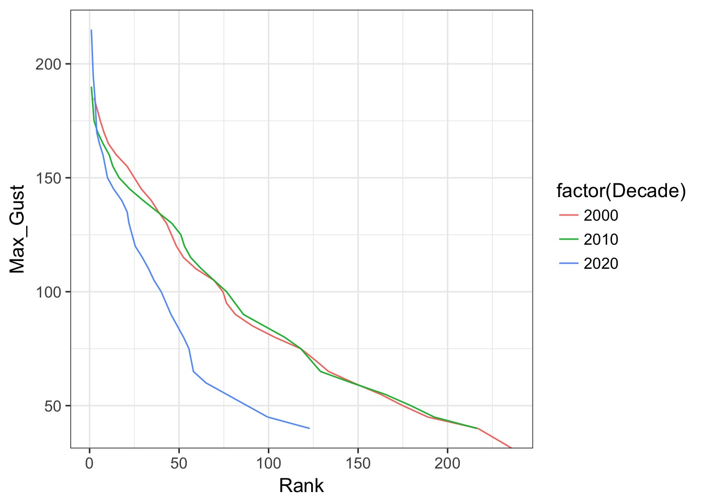

Faded Examples and Dplyr Hurricanes

Libraries for today
Install any you don’t have
Faded Examples…
The rrricanesdata
# A tibble: 13,588 x 18
Key Adv Date Status Name Lat Lon Wind Gust
<chr> <dbl> <dttm> <chr> <chr> <dbl> <dbl> <dbl> <dbl>
1 EP192… 1.00 2017-10-04 09:00:00 Tropic… Ramon 14.3 - 96.0 40.0 50.0
2 AL162… 1.00 2017-10-04 15:00:00 Tropic… Sixt… 12.2 - 81.9 30.0 40.0
3 EP192… 2.00 2017-10-04 15:00:00 Tropic… Ramon 14.9 - 96.5 40.0 50.0
4 AL162… 2.00 2017-10-04 21:00:00 Tropic… Sixt… 12.5 - 82.5 30.0 40.0
5 EP192… 3.00 2017-10-04 21:00:00 Tropic… Ramon 15.2 - 97.7 40.0 50.0
6 AL162… 3.00 2017-10-05 03:00:00 Tropic… Sixt… 12.8 - 82.7 30.0 40.0
7 EP192… 4.00 2017-10-05 03:00:00 Tropic… Ramon 14.8 -102 30.0 40.0
8 AL162… 4.00 2017-10-05 09:00:00 Tropic… Sixt… 13.3 - 83.3 30.0 40.0
9 EP192… 5.00 2017-10-05 09:00:00 Remnan… Ramon 15.0 -102 20.0 30.0
10 AL162… 5.00 2017-10-05 15:00:00 Tropic… Nate 14.3 - 83.7 35.0 45.0
# ... with 13,578 more rows, and 9 more variables: Pressure <dbl>,
# PosAcc <dbl>, FwdDir <dbl>, FwdSpeed <dbl>, Eye <dbl>, SeasNE <dbl>,
# SeasSE <dbl>, SeasSW <dbl>, SeasNW <dbl>Max Gusts per Storm
The
ungroup() is only needed if there is no summarize()
Max Forward Speed per Storm
Minimum Pressure per Storm
Maximum Latitude per Storm Type
Grouping and summarizing
Average Gust per Status Only
How many rows?
Average Forward Speed by Storm
Averge Pressure by Status
A little mutate
Add “Quarter”
What is Quarter?

Testing before overwriting
Testing before overwriting
[1] 4 4 4 4 4 4 4 4 4 4 4 4 4 4 4 4 4 4 4 4 4 4 4 4 4 4 4 4 4 4 4 4 4 4 4
[36] 4 4 4 4 4 4 4 4 4 4 4 4 4 4 4 4 4 4 4 4 4 4 4 4 4 4 4 4 4 4 4 4 4 4 4
[71] 4 4 4 4 4 4 4 4 4 4 3 3 3 3 3 3 3 3 3 3 3 3 3 3 3 3 3 3 3 3Testing before overwriting

Testing before overwriting
[1] 4 3 2 1Now I feel comfortable
Add month, day, and year
Challenge: add decades
Hint: you might need a nice round function…
Plot Average of Max Gusts per Year by Status
Plot Average of Max Gusts per Year by Status

Some more complex workflows
Plot of Average Monthly Max Gusts per Decade
adv_decadal_monthly_max_gust <- adv %>%
group_by(Decade, Year, Month) %>%
summarize(Max_Gust = max(Gust, na.rm=TRUE)) %>%
group_by(Decade, Month) %>%
summarize(Mean_Max_Gust = mean(Max_Gust))
#plot it!
ggplot(adv_decadal_monthly_max_gust, mapping = aes(x = Month,
y = Mean_Max_Gust,
color = factor(Decade))) +
geom_line()Plot of Average Monthly Max Gusts per Decade

Plot Average Maximum Storm Windspeeds by Year
Plot Average Maximum Storm Windspeeds by Year

Plot the Rank Order Distribution of Gusts by Decade
Plot the Rank Order Distribution of Gusts by Decade
